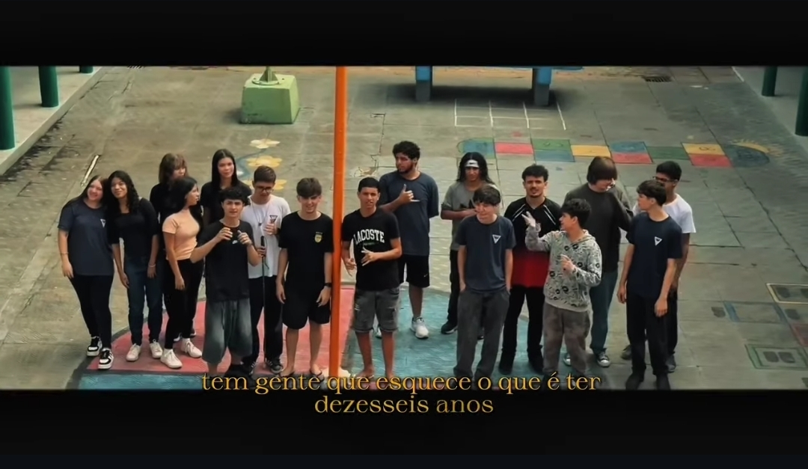

Não é apenas o fim do ensino médio. É o encerramento do capítulo onde crescemos juntos. O Terceirão deixa saudade, mas a história é para sempre.
Ninguém se conhecia direito. Rostos novos, matérias novas, e a sensação de que o ensino médio ia durar uma eternidade. Foram os primeiros trabalhos em grupo, as primeiras risadas no fundo da sala e o início das amizades que durariam até o fim.
Já estávamos em casa. As panelinhas se firmaram, as resenhas no intervalo ficaram melhores e as provas... bom, a gente deu um jeito. Foi o ano de focar, mas também de aproveitar cada momento antes da pressão chegar.
O ano voou. Enem, vestibulares, simulados e a ficha caindo aos poucos: é a última vez que vamos estar todos juntos nesta mesma sala todos os dias. Cada evento, cada foto e cada aula teve sabor de despedida.

tem gente que esquece o que é ter dezesseis anos
Espaço reservado
Espaço reservado
Espaço reservado